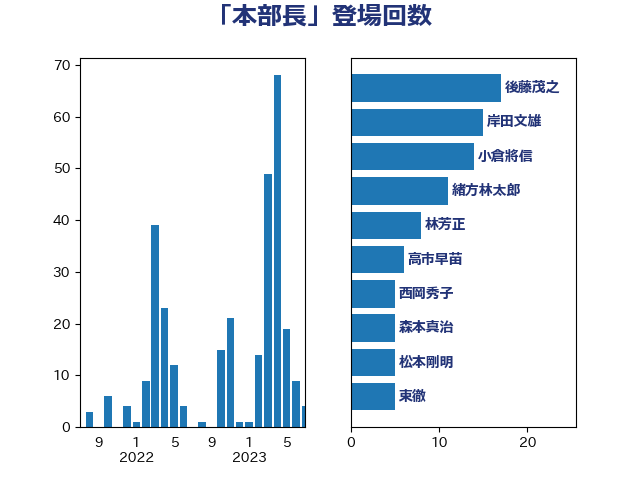

単語「本部長」

| 後藤茂之 | 自由民主党 | 17 回 |
| 岸田文雄 | 自由民主党 | 15 回 |
| 小倉將信 | 自由民主党 | 14 回 |
| 緒方林太郎 | 無所属 | 11 回 |
| 林芳正 | 自由民主党 | 8 回 |
| 高市早苗 | 自由民主党 | 6 回 |
| 西岡秀子 | 国民民主党 | 5 回 |
| 森本真治 | 立憲民主党 | 5 回 |
| 松本剛明 | 自由民主党 | 5 回 |
| 東徹 | 日本維新の会 | 5 回 |
| 上田清司 | 国民民主党 | 5 回 |
| 阿部司 | 日本維新の会 | 4 回 |
| 杉尾秀哉 | 立憲民主党 | 4 回 |
| 本庄知史 | 立憲民主党 | 4 回 |
| 山井和則 | 立憲民主党 | 4 回 |
| 塩川鉄也 | 日本共産党 | 4 回 |
| 和田義明 | 自由民主党 | 4 回 |
| 中島克仁 | 立憲民主党 | 4 回 |
| 青山繁晴 | 自由民主党 | 3 回 |
| 野村哲郎 | 自由民主党 | 3 回 |
| 山際大志郎 | 自由民主党 | 3 回 |
| 大西健介 | 立憲民主党 | 3 回 |
| 中谷一馬 | 立憲民主党 | 3 回 |
| 三ッ林裕巳 | 自由民主党 | 3 回 |
| 高橋光男 | 公明党 | 2 回 |
| 鈴木貴子 | 自由民主党 | 2 回 |
| 谷公一 | 自由民主党 | 2 回 |
| 西田昌司 | 自由民主党 | 2 回 |
| 西村智奈美 | 立憲民主党 | 2 回 |
| 西村康稔 | 自由民主党 | 2 回 |
| 田嶋要 | 立憲民主党 | 2 回 |
| 玄葉光一郎 | 立憲民主党 | 2 回 |
| 猪口邦子 | 自由民主党 | 2 回 |
| 湯原俊二 | 立憲民主党 | 2 回 |
| 浮島智子 | 公明党 | 2 回 |
| 浅川義治 | 日本維新の会 | 2 回 |
| 泉田裕彦 | 自由民主党 | 2 回 |
| 武井俊輔 | 自由民主党 | 2 回 |
| 岩谷良平 | 日本維新の会 | 2 回 |
| 山本香苗 | 公明党 | 2 回 |
| 山崎誠 | 立憲民主党 | 2 回 |
| 小渕優子 | 自由民主党 | 2 回 |
| 小沼巧 | 立憲民主党 | 2 回 |
| 寺田稔 | 自由民主党 | 2 回 |
| 宮本岳志 | 日本共産党 | 2 回 |
| 堀内詔子 | 自由民主党 | 2 回 |
| 友納理緒 | 自由民主党 | 2 回 |
| 加藤勝信 | 自由民主党 | 2 回 |
| 井上哲士 | 日本共産党 | 2 回 |
| 齊藤健一郎 | 無所属 | 1 回 |
| 鬼木誠 | 立憲民主党 | 1 回 |
| 高良鉄美 | 無所属 | 1 回 |
| 阿達雅志 | 自由民主党 | 1 回 |
| 鈴木憲和 | 自由民主党 | 1 回 |
| 鈴木俊一 | 自由民主党 | 1 回 |
| 金子恭之 | 自由民主党 | 1 回 |
| 野田聖子 | 自由民主党 | 1 回 |
| 野田国義 | 立憲民主党 | 1 回 |
| 重徳和彦 | 立憲民主党 | 1 回 |
| 進藤金日子 | 自由民主党 | 1 回 |
| 赤澤亮正 | 自由民主党 | 1 回 |
| 赤池誠章 | 自由民主党 | 1 回 |
| 西村明宏 | 自由民主党 | 1 回 |
| 菊田真紀子 | 立憲民主党 | 1 回 |
| 茂木敏充 | 自由民主党 | 1 回 |
| 若松謙維 | 公明党 | 1 回 |
| 羽田次郎 | 立憲民主党 | 1 回 |
| 竹内真二 | 公明党 | 1 回 |
| 窪田哲也 | 公明党 | 1 回 |
| 空本誠喜 | 日本維新の会 | 1 回 |
| 福重隆浩 | 公明党 | 1 回 |
| 福岡資麿 | 自由民主党 | 1 回 |
| 石破茂 | 自由民主党 | 1 回 |
| 石井正弘 | 自由民主党 | 1 回 |
| 田村智子 | 日本共産党 | 1 回 |
| 田村まみ | 国民民主党 | 1 回 |
| 猪瀬直樹 | 日本維新の会 | 1 回 |
| 牧島かれん | 自由民主党 | 1 回 |
| 牧山ひろえ | 立憲民主党 | 1 回 |
| 牧原秀樹 | 自由民主党 | 1 回 |
| 河野太郎 | 自由民主党 | 1 回 |
| 江島潔 | 自由民主党 | 1 回 |
| 永岡桂子 | 自由民主党 | 1 回 |
| 水野素子 | 立憲民主党 | 1 回 |
| 武部新 | 自由民主党 | 1 回 |
| 榛葉賀津也 | 国民民主党 | 1 回 |
| 柳ヶ瀬裕文 | 日本維新の会 | 1 回 |
| 松野博一 | 自由民主党 | 1 回 |
| 本田太郎 | 自由民主党 | 1 回 |
| 末松義規 | 立憲民主党 | 1 回 |
| 木原誠二 | 自由民主党 | 1 回 |
| 斉藤鉄夫 | 公明党 | 1 回 |
| 平将明 | 自由民主党 | 1 回 |
| 岬麻紀 | 日本維新の会 | 1 回 |
| 岡本あき子 | 立憲民主党 | 1 回 |
| 山本太郎 | れいわ新選組 | 1 回 |
| 山口壯 | 自由民主党 | 1 回 |
| 山口俊一 | 自由民主党 | 1 回 |
| 小泉進次郎 | 自由民主党 | 1 回 |
| 小林鷹之 | 自由民主党 | 1 回 |
| 小川淳也 | 立憲民主党 | 1 回 |
| 小寺裕雄 | 自由民主党 | 1 回 |
| 宮路拓馬 | 自由民主党 | 1 回 |
| 宮崎政久 | 自由民主党 | 1 回 |
| 太栄志 | 立憲民主党 | 1 回 |
| 大串博志 | 立憲民主党 | 1 回 |
| 坂本祐之輔 | 立憲民主党 | 1 回 |
| 吉田久美子 | 公明党 | 1 回 |
| 吉田とも代 | 日本維新の会 | 1 回 |
| 古賀之士 | 立憲民主党 | 1 回 |
| 古屋範子 | 公明党 | 1 回 |
| 倉林明子 | 日本共産党 | 1 回 |
| 中村裕之 | 自由民主党 | 1 回 |
| 三上えり | 立憲民主党 | 1 回 |